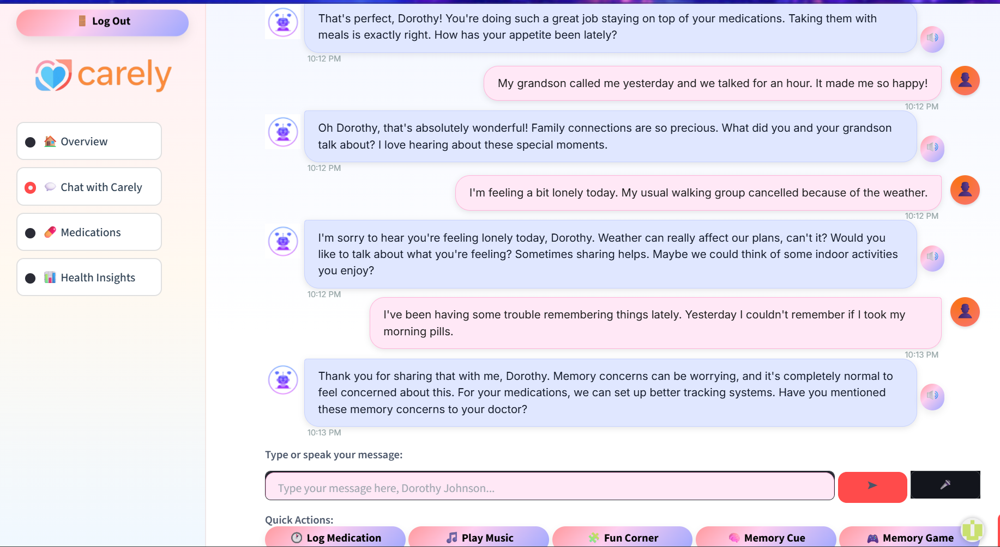
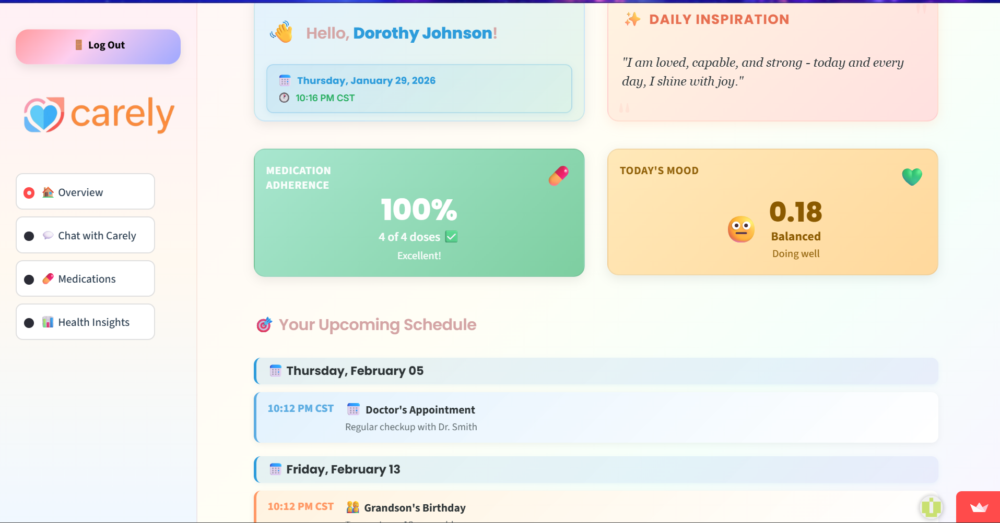
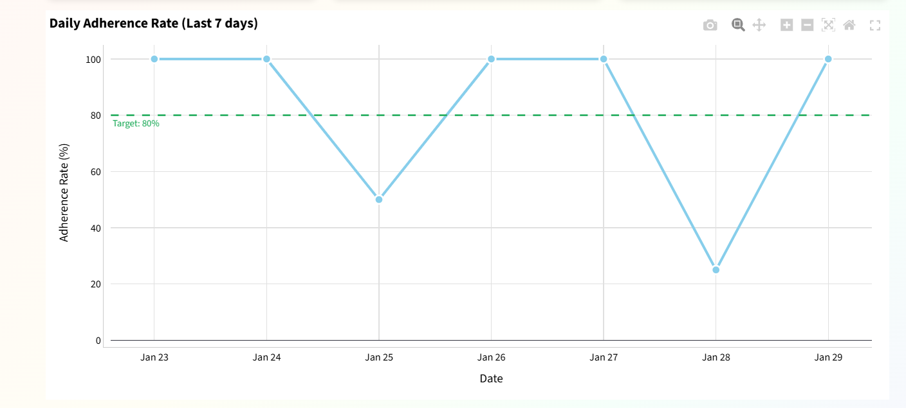
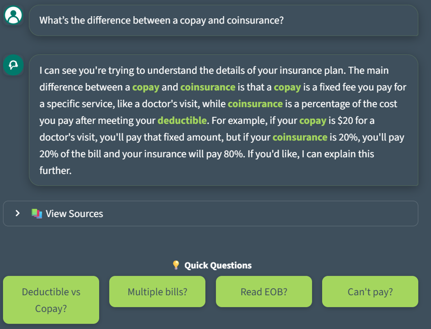
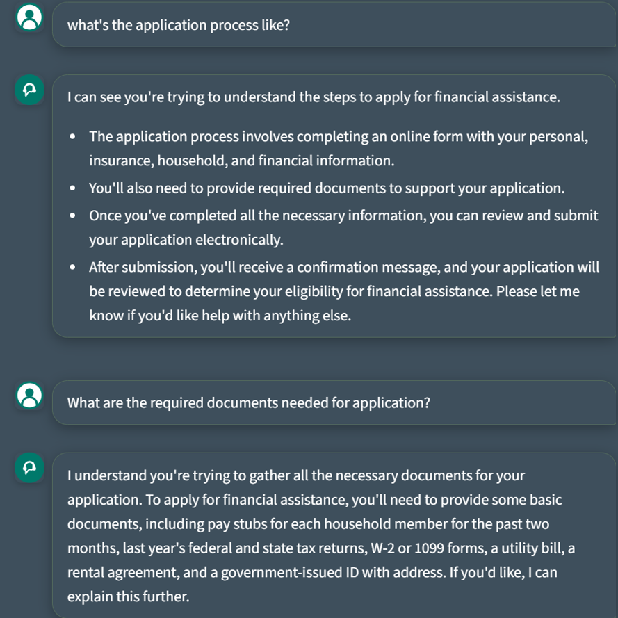

Featured Projects
Applied AI



Carely — AI Companion for Elderly Care
Privacy-first conversational AI companion for elderly users with multi-layer memory system, PII detection guardrails, health tracking, and caregiver notifications. Features voice/text interaction and sentiment analysis for emergency detection.


Healthcare Billing Assistant — RAG-Based Patient Support Chatbot
Production-ready RAG chatbots helping patients understand medical bills, insurance concepts, and financial assistance programs. Deployed with Groq Llama-3 (Streamlit) and Azure OpenAI (BAA-compliant) for enterprise use, reducing administrative burden and improving self-service support.
Data Engineering


YouTube Analytics Data Lake & End-to-End ETL Pipeline on AWS
Scalable cloud data engineering pipeline analyzing YouTube trending video data. Built data lake on S3 with ETL workflows using AWS Lambda and Glue, transforming JSON/CSV into Parquet tables for Athena SQL analysis. Dashboard visualizes trending categories and engagement metrics.


Automated ETL Orchestration with Apache Airflow & AWS
Fully automated ETL workflow using Apache Airflow to orchestrate data pipelines across AWS services. Built modular DAGs for scheduled ingestion, transformation, and storage with monitoring, logging, and alerting for operational reliability and scalable data platforms.
Data Science & Analytics


LA Crime Hotspot Prediction & Anomaly Detection
End-to-end ML system predicting hourly crime hotspots across LA districts using 1M+ records. Automated ML lifecycle with AWS SageMaker Pipelines, achieving 93% accuracy with XGBoost. Engineered temporal, spatial, and demographic features for proactive resource allocation.

Lights, Data, Action — Entertainment Industry Analytics Dashboard Suite
Interactive Tableau dashboards analyzing Netflix, IMDb Top 1000 movies, TV shows, and Oscar awards data. Integrated and cleaned multiple datasets to uncover patterns in content performance, audience preferences, and critical recognition, supporting data-driven content investment decisions.